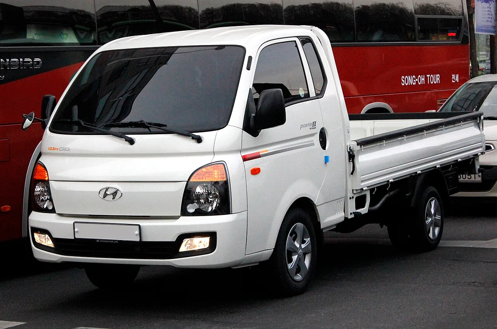
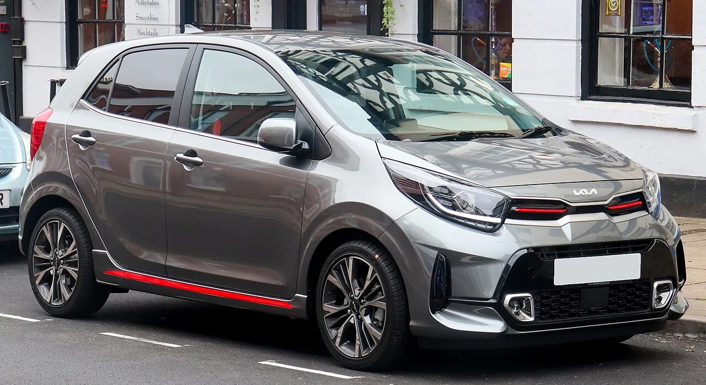

▲ 리스 계약서에 서명하기 전 확인해야 할 것은 '리스냐 렌트냐'가 아니라 '어떤 차종이냐'다 ⓒ CarPrism (AI 생성 이미지)
"차를 리스로 뽑으면 세금이 확 줄어든다"는 말을 사업자들 사이에서 자주 듣는다.
절반만 맞는 말이다. 어떤 차를 어떤 방식으로 계약하느냐에 따라 세금 혜택 자체가 완전히 달라진다. 특히 개인사업자가 흔히 타는 일반 승용차는 부가세 매입세액공제가 원칙적으로 불가능하다는 사실이 잘 알려져 있지 않다.
국세청 규정과 세법 조문을 기준으로 개인사업자가 업무용 차량을 리스할 때 실제로 어떤 세금 혜택을 받을 수 있고, 어디서부터는 안 되는지 정리했다.
1. 리스 vs 구매·렌트 — 세금 구조부터 다르다
차량을 마련하는 방법은 크게 세 가지다. 현금(할부) 구매, 장기렌트, 리스. 세 방식 모두 '업무용으로 쓴 비용'이라는 점에서는 같지만, 부가가치세 처리 방식이 근본적으로 다르다.
| 방식 | 세금계산서 발급 | 매입세액공제 가능성 |
|---|---|---|
| 현금(할부) 구매 | 차량 매매 시 발급됨 | 차종 요건 충족 시 공제 가능 |
| 장기렌트 | 월 대여료에 세금계산서 발급 가능 (렌트회사는 과세사업자) | 차종 요건 충족 시 공제 가능 |
| 리스 | 세금계산서 발급 불가 (계산서만 발급) — 리스사가 여신전문금융업으로 부가세 면세사업자 | 원칙적으로 매입세액공제 불가 (애초에 부가세가 부과되지 않음) |
📍 리스는 '세금계산서'가 아니라 '계산서'가 나온다
리스회사는 여신전문금융업법상 부가가치세 면세 대상이다. 그래서 리스료에는 애초에 부가세가 붙지 않고, 매달 받는 서류도 매입세액공제용 세금계산서가 아니라 단순 계산서다. 리스료가 저렴해 보이는 이유 중 하나이기도 하지만, 매입세액공제라는 항목 자체가 성립하지 않는다는 뜻이기도 하다.
즉 "리스가 세금 혜택이 크다"는 말은 부가세가 아니라 종합소득세(경비 처리) 쪽 이야기에 가깝다. 부가세만 놓고 보면 오히려 렌트가 매입세액공제 가능성이 더 열려 있는 방식이다.
📍 리스도 '운용리스'와 '금융리스'로 나뉜다
한 마디로 '리스'라 불러도 계약 구조는 둘로 갈린다. 운용리스는 리스사가 차를 사서 빌려주고 계약 만료 시 반납이 가능한 방식으로, 장기렌트와 성격이 비슷하다. 비용 한도를 계산할 때도 월 리스료에서 보험료·자동차세 등을 뺀 금액을 감가상각비 상당액으로 본다. 반면 금융리스는 리스사가 차량을 구입해 명의만 보유할 뿐 사실상 이용자가 할부로 사는 구조에 가까워, 만료 시 반납이 아니라 인수나 재리스만 가능하고 감가상각비 자체를 한도 계산 대상으로 삼는다. 두 방식 모두 리스사가 부가세 면세사업자라는 점은 같아서, 세금계산서가 아닌 계산서가 발급되고 매입세액공제 항목도 성립하지 않는다는 결론은 동일하다.
2. 부가세 매입세액공제, 가능한 차종은 따로 있다
매입세액공제 여부를 가르는 기준은 리스냐 렌트냐가 아니라 '어떤 차종이냐'다. 부가가치세법은 개별소비세 과세 대상 차량의 구입·임차·유지 비용에 대한 매입세액을 원칙적으로 공제해주지 않는다.
✅ 매입세액공제가 가능한 차종 (개별소비세 비과세 차량)
· 경차 — 배기량 1,000cc 이하
· 승합차 — 정원 9인승 이상 (카니발 9인승 이상 등)
· 화물차 — 포터·봉고 등 적재함이 있는 화물자동차
· 이륜자동차 — 125cc 이하
· 특수자동차 — 구급차·트럭믹서 등

▲ 포터 같은 화물차는 개별소비세 비과세 차량이라 매입세액공제가 가능하다 ⓒ Wikimedia Commons

▲ 모닝·레이 같은 1000cc 이하 경차도 매입세액공제 대상이다 ⓒ Wikimedia Commons
이 차종을 업무용으로만 사용한다면, 렌트·할부구매의 경우 취득·유지(유류비·수리비 등)에 따른 부가세를 매입세액으로 공제받을 수 있다. 다만 리스는 앞서 설명한 대로 세금계산서 자체가 없어 이 요건을 충족해도 공제 항목이 발생하지 않는다.
3. 일반 승용차는 왜 공제가 안 되나
세단이나 SUV 같은 일반 승용차(8인승 이하, 배기량 1,000cc 초과)는 개별소비세 과세 대상이다. 부가가치세법은 이런 차량의 구입비뿐 아니라 임차료·유류비·수리비 등 유지 비용에 대한 매입세액도 함께 공제 대상에서 제외한다.
업무용으로만 쓴다고 주장해도 마찬가지다. 이 규정은 '실제 용도'가 아니라 '차종 자체'를 기준으로 매입세액공제 여부를 가른다. 개인 승용차를 사업용으로 섞어 쓸 가능성을 원천적으로 차단하기 위한 취지다.
📍 그렇다고 비용처리까지 막히는 건 아니다
부가세 매입세액공제와 종합소득세 필요경비(비용) 인정은 별개다. 일반 승용차라도 업무용으로 사용했다면 다음 장에서 다루는 '업무용승용차 관련 비용 특례'에 따라 일정 한도까지는 경비로 인정받을 수 있다. 다만 그 한도가 매입세액공제 없는 승용차보다 훨씬 까다롭게 관리된다.
4. 승용차 리스료, 얼마까지 비용으로 인정될까 — 업무용승용차 특례
일반 승용차의 비용처리를 규율하는 규정이 소득세법(개인사업자)·법인세법(법인)의 '업무용승용차 관련 비용 특례'다. 리스료·감가상각비·유류비·보험료·수선비·자동차세 등을 모두 합쳐 '업무용승용차 관련 비용'으로 묶어 다룬다.
| 항목 | 내용 |
|---|---|
| 감가상각비(리스는 '감가상각비 상당액') 한도 | 연 800만원 — 초과분은 해당 연도에 비용으로 인정 안 되고 다음 해로 이월 |
| 리스료 계산 방식 | 월 리스료 중 보험료·자동차세·수선유지비 등을 제외한 금액을 감가상각비 상당액으로 보아 800만원 한도 적용 |
| 운행기록부 미작성 시 | 업무용승용차 관련 비용 합계액이 연 1,500만원을 넘으면, 초과분은 운행기록부 없이는 비용으로 인정 안 됨 |
| 운행기록부 작성 시 | 업무용 사용 비율만큼 비용 인정 — 1,500만원을 넘어도 업무 사용 비율을 입증하면 그만큼 인정 |
| 처분손실 한도 | 차량을 팔 때 발생한 손실도 연 800만원까지만 비용 인정, 초과분은 이월 |
✅ 리스료 계산 예시로 감 잡기
월 리스료 100만원(그중 보험료·자동차세 등 10만원 포함) → 감가상각비 상당액은 연 (100만원-10만원)×12 = 1,080만원 → 800만원까지만 비용 인정, 나머지 280만원은 다음 해로 이월된다.
업무용승용차 관련비용 특례의 구체적인 조문과 계산 방식은 국세청 홈택스와 국가법령정보센터에서 확인할 수 있다. 국세청 안내 바로가기
5. 법인과 다른 점 — 개인사업자는 어디까지 의무일까
업무용승용차 비용 특례 자체는 법인·개인사업자 모두에게 적용되지만, '업무전용자동차보험 가입 의무'는 그동안 두 사업자 형태가 달랐다.
| 구분 | 기존 규정 | 2026년 이후 |
|---|---|---|
| 법인 | 보유·리스·렌트한 모든 업무용승용차에 업무전용자동차보험 가입 의무 | 동일 (미가입 시 관련 비용 전액 필요경비 불산입) |
| 개인사업자 (성실신고확인대상자·전문직*) | 2대 이상 차량 보유 시, 1대를 초과하는 차량부터 가입 의무 | 동일 + 미가입 시 관련비용 50% 인정 제도가 2025.12.31 종료 → 전액 불산입 |
| 개인사업자 (그 외 복식부기의무자) | 가입 의무 없음 | 가입 의무 대상으로 신규 확대 (세제개편 방향) |
| 간편장부대상자 (영세 개인사업자) | 특례 자체 적용 제외 | 동일 — 업무용승용차 특례 미적용 |
*변호사·회계사·세무사·의사 등 전문직 사업자는 매출 규모와 무관하게 성실신고확인대상자에 준해 업무전용자동차보험 가입 의무가 적용된다.
📍 2026년, 개인사업자도 사실상 법인과 비슷해진다
기존에는 개인사업자는 법인보다 규제가 느슨하다는 인식이 있었지만, 세제개편 방향에 따라 복식부기의무자(업종별 매출 기준 충족 사업자)부터 업무전용자동차보험 의무가 확대되는 추세다. 특히 2대 이상 차량을 굴리는 개인사업자라면 2026년 개편 내용을 반드시 확인해야 한다.
✅ 미가입 시 실제로 얼마나 손해일까 — 예시로 보기
성실신고확인대상자인 개인사업자가 승용차 2대(각각 연간 관련비용 700만원, 합계 1,400만원)를 보유하고 있는데, 1대를 초과하는 차량(2대째)에 업무전용자동차보험을 가입하지 않았다고 가정하자. 2025년까지는 미가입 차량 비용의 50%(350만원)까지는 인정받을 수 있었지만, 이 50% 인정 제도가 2025년 12월 31일로 종료되면서 2026년분부터는 미가입 차량의 관련비용 700만원이 전액 필요경비 불산입된다. 종합소득세 최고세율(45%, 지방소득세 포함 약 49.5%) 구간이라면 약 350만원의 세부담이 그대로 늘어나는 셈이다. 2026년부터는 일반 복식부기의무자도 같은 방식(1대 초과 차량부터 미가입 시 전액 불산입)이 적용되므로, 차량이 2대 이상이라면 보험 가입 여부부터 다시 점검해야 한다.
▲ 업무용승용차 관련 비용 특례와 업무전용자동차보험 의무는 국세청·기획재정부 세제개편안에 따라 매년 조정된다 ⓒ Wikimedia Commons
6. 개인사업자 실무 체크리스트
결국 리스 계약을 하기 전에 확인해야 할 건 리스냐 렌트냐가 아니라 다음 네 가지다.
✅ 계약 전 체크리스트
1. 차종부터 확인 — 경차·9인승 이상 승합차·화물차라면 렌트나 구매 쪽이 매입세액공제 측면에서 유리
2. 일반 승용차라면 부가세 공제는 포기하고, 종합소득세 경비 처리(연 800만원 한도)만 노릴 것
3. 내가 성실신고확인대상자·전문직·복식부기의무자인지 확인 — 업무전용자동차보험 의무 대상 여부가 달라짐
4. 차량이 2대 이상이라면 운행기록부를 미리 준비 — 연 1,500만원 넘는 비용을 인정받으려면 필수
5. 매년 바뀌는 세법 개정 사항은 계약 전 세무사와 반드시 재확인
결과적으로 "리스가 무조건 절세다"라는 접근보다는, 매입세액공제·경비인정·보험 의무 세 가지를 각각 따져보는 것이 개인사업자에게 더 정확한 절세 전략이 된다.
7. 요약
개인사업자 차량 리스의 세금 혜택은 차종에 따라 완전히 달라진다. 경차·9인승 이상 승합차·화물차는 부가세 매입세액공제가 가능하지만, 일반 승용차는 리스·렌트·구매 방식과 무관하게 원칙적으로 공제 대상이 아니다.
리스는 여신전문금융업 면세 특성상 애초에 세금계산서가 발급되지 않아, 매입세액공제라는 항목 자체가 성립하지 않는다. 반면 렌트는 세금계산서 발급이 가능해 공제 대상 차종이라면 공제를 받을 수 있다.
승용차라도 업무용승용차 특례에 따라 감가상각비 상당액 연 800만원까지는 비용으로 인정되며, 총 비용이 연 1,500만원을 넘으면 운행기록부가 필요하다. 2026년부터는 복식부기의무자로 업무전용자동차보험 가입 의무가 확대되는 만큼, 계약 전 본인의 사업자 유형과 차종 요건을 함께 확인해야 한다.